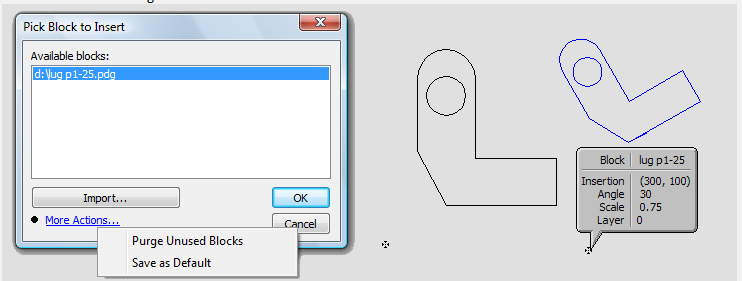
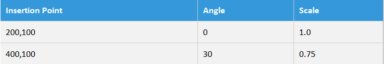

Block handling
Insert Block
Insert Block
A drawing can contain references to other drawings, which can be inserted into the main drawing at any origin point, at any scale and rotation angle. These references are called blocks. This command is used to insert blocks into a drawing.

Assume we have a drawing, called "lug p1-25.pdg". To insert this block into another drawing, click the Insert Block toolbar button. This brings up the Pick Block to Insert dialogue, which lists all part drawings that have already been inserted into this drawing as blocks. A new block can be added to this list by clicking the Import button, and choosing the drawing file where the block resides. After importing this drawing in, click OK to return to the main drawing.
The block can be inserted into the main drawing by typing in the Angle and Scale, and then providing the coordinates by either typing into the X and Y boxes and pressing Enter, or clicking on the drawing. The figure above shows the result after the block has been inserted into this drawing twice, with these following values:

The point (0, 0) in the "lug p1-25.pdg" drawing is mapped to the insertion point in this drawing, which is indicated by the small cross-like indicator. This is called the insertion node of the block, and is used to work with the block. Clicking on the insertion node with the Pick tool selects the block, and the block can be moved by clicking on its insertion node and dragging. Clicking on the insertion node of the block in the Info mode displays information about the block, as seen in the above figure.
An inserted block behaves as a unit; individual entities in a block cannot be selected, moved or edited independently, and the entities within the block cannot act as trim or extend boundaries. The actual entities of the inserted drawing are not imported into the main drawing; only a reference or pointer to the drawing is stored. Therefore, the inserted drawing must be available when the main drawing has to be opened. If it is not, blocks that reference this drawing are not loaded, though other entities are. If you have laser-tooled the inserted drawing, the laser tooling is also imported and used when the drawing is imported. Whenever the inserted drawing or its tooling is modified and saved, the main drawing is automatically refreshed by reloading the block. You can even edit the inserted block in a separate window while the main drawing is open. If you switch back to the main drawing after saving the inserted drawing, you will see that it is automatically updated to use the new block. n Holding down the Ctrl key when the block is inserted into the main drawing explodes the block into its constituent polylines and pastes these polylines into the main drawing. These entities then behave like normal entities; they can be selected, and edited individually. You can also explode a block that has been previously inserted using the Explode Block command.
Explode Block
Explode Block
Exploding a block
This tool is used to explode a block by replacing it by its constituent entities. After exploding a block, each entity that was part of the block can then be selected, and manipulated separately. To use this tool, just click on the block to be exploded.
Exploding arrays
This tool can also be used to explode an array into its constituent polylines. (These arrays are created using the Rectangular Array command, the Polar Array command or the Common Shapes command). To explode an array, just click on any one of the polylines making up the array.
+